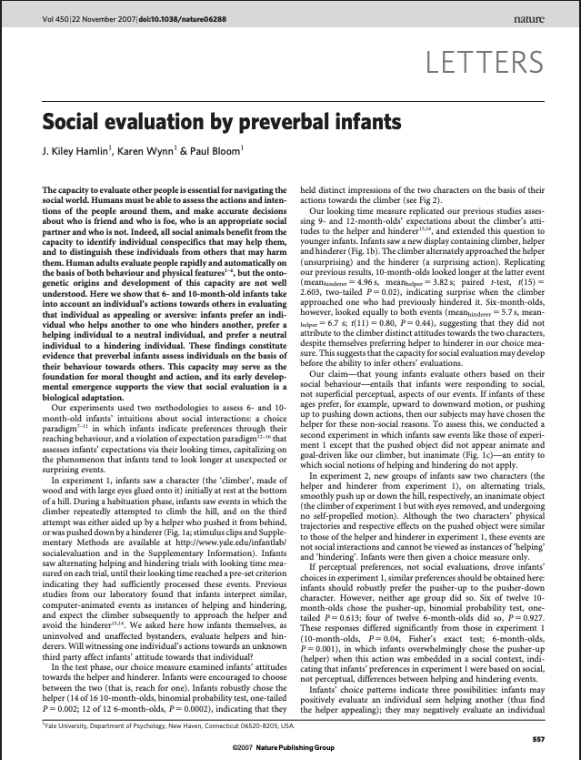
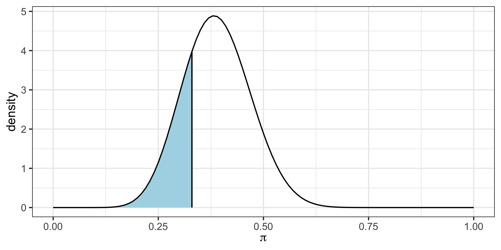
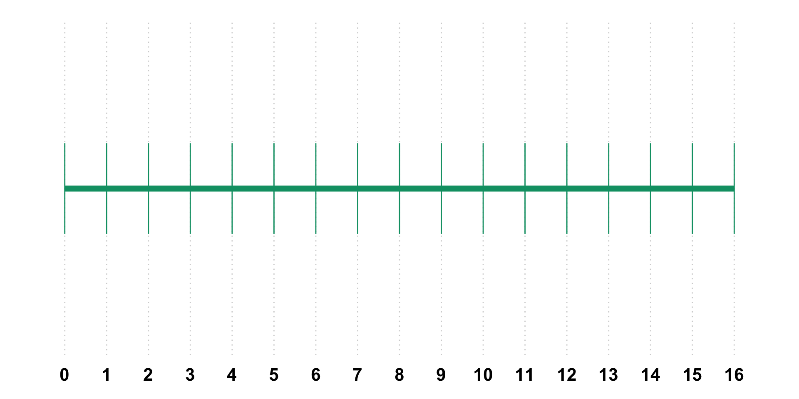
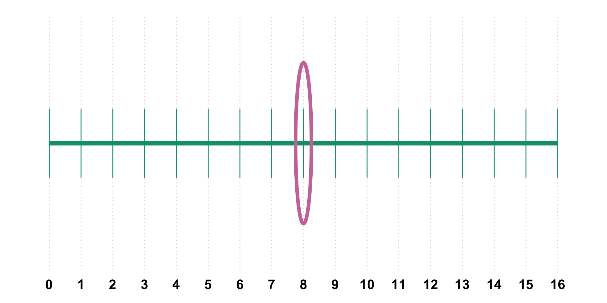
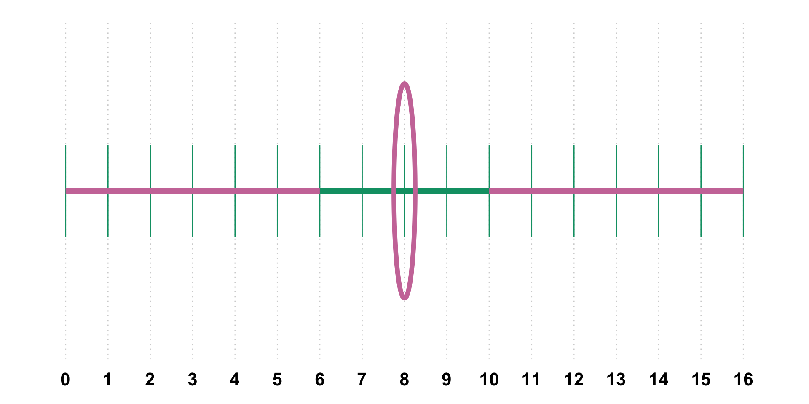

Inference for a Proportion
Bayesian
P (Hypotheses | Data) Hypotheses have probabilities in light of the observed data
Frequentist
P (Data | Hypotheses)
Data have probability considering the conditions of the hypotheses
Credible Intervals
Confidence Intervals

In the previous example we could talk about probability of the parameter.
For instance \(P(\pi<0.33 | y)\), in other words probability of the parameter being less than 0.33 given that we have observed data (9 out of 20 movies passed).
In frequentist inference we will talk about probability of data given some parameter value.
as seen in Chance, B. L., & Rossman, A. J. (2006). Investigating statistical concepts, applications and methods

Babies are watching a video with a helper or hinderer shape.
Then they are asked to pick a shape.
14 out of 16 infants (10-months old) have chosen the helper shape. What are some possible explanations of this?
Write down all possible ideas that you can think of with your neighbor.
Study Design
Hypothesis
Hypothesis
Babies are making a random choice
Babies are not making a random choice
\(H_0\): Babies are making a random choice
\(H_a\): Babies are not making a random choice
\(H_0\): Babies are making a random choice
\(H_a\): Babies are not making a random choice
Which of these is easier to model right now?
\(H_0\): Babies are making a random choice (\(\pi = 0.5\))
\(H_a\): Babies are not making a random choice (\(\pi \neq 0.5\))
Let’s assume that babies are making a random choice
Out of 16 babies, how many babies would you expect to choose the helper shape?
Could this number be 7? In other words, if babies were making random choices, would you be surprised to see 7 babies choose the helper shape?
What is your surprise threshold? Below and above which number would you start getting surprised?

What is your surprise threshold? Below and above which number would you start getting surprised?

What is your surprise threshold? Below and above which number would you start getting surprised?

With your neighbor, flip a coin 16 times and record the number of heads that you observe. In other words, each group is a set of researchers observing the behavior of 16 babies from Randomville.
Hypotheses Babies are making a random choice Babies are not making a random choice
Do you agree with the authors claim “These findings constitute evidence that preverbal infants assess individuals on the basis of their behaviour towards others”? Why? Why not? Do the findings generalize to all infants?
Instead of count of babies, we will often see surprise threshold set at 0.05 probability. This is a debatable topic what the surprise threshold should be.
If the sample observation is in the 0.05 highlighted region, then we would be “surprised”. In other words, if the sample is in the 0.05 highlighted region, then we would conclude that there is a low probability of observing a surprising sample like this one or something more extreme if the randomness model were true.
A p-value is the probability of obtaining your observed results or something even more extreme assuming that the null hypothesis is correct.
We just tested the “Randomness Model” (\(\pi = 0.5\)) and found 14/16 babies was very surprising. We rejected the idea that they were just guessing.
But that only tells us what the proportion isn’t.
If the true proportion of all babies who prefer the helper isn’t 0.5, what is it?
Confidence Intervals help us move from a single “Yes/No” test to a range of plausible values for our parameter.
Recall our Surprise Threshold. We get “surprised” if our data is too far away from what a model predicts.
Imagine testing every possible value for \(\pi\) (the true proportion) from 0 to 1:
A Confidence Interval is simply the collection of all values that would NOT make us surprised if we tested them as the null hypothesis. You can think of it as the “non-surprise” range for \(\pi\).
In Frequentist inference, the true population proportion (\(\pi\)) is a fixed value. It is like a fish sitting still in the ocean.
For our 16 infants, the 95% Confidence Interval is (0.617, 0.984).
We are 95% confident that the true proportion of babies who prefer the helper shape is between 61.7% and 98.4%. This is NOT a probability.
The “Confidence Level” (95%) is a property of the net’s design.
If we go fishing 100 times with this net, we expect that 95 of those times, the net will be wide enough and positioned well enough to catch the fish.
If we take a sample 100 times from the population over and over again, construct a confidence interval using each of the sample data, we would expect 95% of the confidence intervals to contain the true/unknown parameter value of \(\pi\).
Once we calculate our interval for the 16 babies, the interval is fixed. The true proportion is also fixed.
Incorrect: “There is a 95% probability that the true proportion is in this specific interval.” Remember we can make probabilistic judgments about the parameter in Bayesian framework - not frequentist.
Correct: “We used a method that is, in the long run, expected to capture the true proportion 95% of the time successfully.”